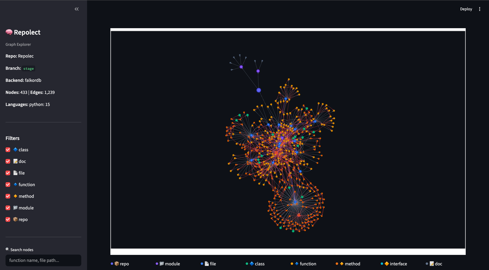

Reasoning Code Intelligence
14 MCP Tools
Repolect
Open-source, local-first code intelligence engine that indexes codebases into a hierarchical semantic tree and knowledge graph. Navigates architecture with LLM reasoning instead of vector similarity, exposing 14 native MCP tools.